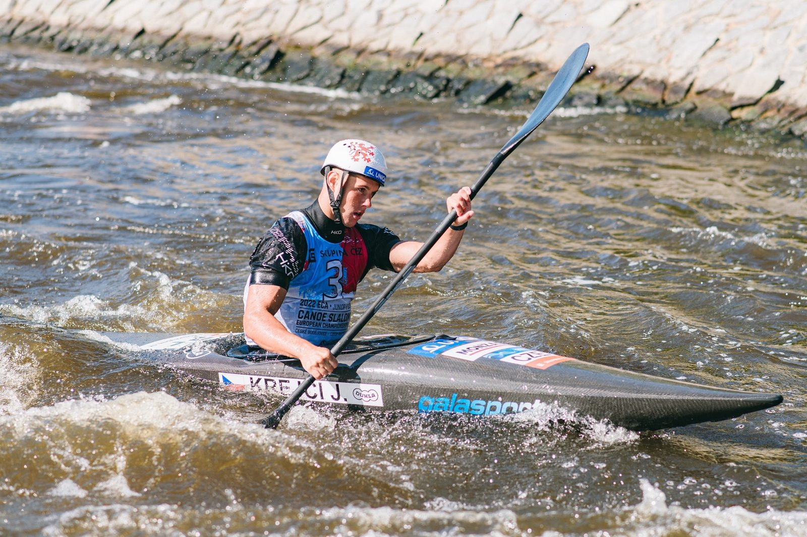

V Českých Budějovicích dnes odstartoval evropský šampionát mladých vodních slalomářů. Pro titul juniorských mistryň Evropy v hlídkách si dojely kajakářky Klára Kneblová, Kateřina Švehlová a Olga Samková. Čtvrté skončily závodnice do 23 let ve složení Antonie Galušková, Gabriela Satková a Lucie Nesnídalová. Kajakáře v obou věkových kategoriích odsunuly ze stupňů vítězů padesátivteřinové penalizace. Dopolední program patřil také individuálním kvalifikacím, kde si všechny české lodě zajistily postup do semifinále.
Česká výprava vodních slalomářů slaví na mistrovství Evropy juniorů a závodníků do 23 let první medaili. Se záludnou tratí, která potrápila celou řadu favorizovaných posádek, si z českého pohledu nejlépe poradily juniorky Klára Kneblová, Kateřina Švehlová a Olga Samková – před domácím publikem vybojovaly zlaté medaile. „Nejdůležitější bylo, abychom jely čistě a neudělaly nějakou fatální chybu. To se nám podařilo, a nakonec je z toho první místo. Myslím, že jsme jely dobře a závod se nám povedl,“ zhodnotila Samková. „Nervozita byla, zejména proto, že se hodně kazilo. Měly jsme trošku strach, protože i favoritky to hodně kazily. Musely jsme si to pohlídat a zajet pojištěnou jízdu,“ doplnila Kneblová. Velkou radost v cíli měla zejména domácí závodnice Švehlová. „Je to opravdu skvělý pocit. Myslím, že není nic lepšího než si pro titul dojet právě tady.“
Ostatní české hlídky chybovaly a na medaile nedosáhly – Galušková, Satková a Nesnídalová braly čtvrtou příčku s 10sekundovou ztrátou na bronz, juniory Vence, Nováka a Semeráda odsunula padesátivteřinová penalizace na osmou příčku, trio do 23 let Krejčí, Bárta a Zima skončilo po dvou trestných padesátkách třinácté.
Dopolední program nabídl kajakářskou kvalifikaci v obou věkových kategoriích. S výjimkou Gabriely Satkové, která musela absolvovat druhou jízdu, se všichni čeští závodníci kvalifikovali hned napoprvé. Jakub Krejčí zvítězil s téměř pětisekundovým náskokem. „Trať se mi líbí, i když jsem upřímně nečekal, že na kvalifikaci postaví takto náročnou. Ale sjel jsem to s přehledem, tak, jak jsme se s trenérem domluvili. Sám jsem byl v cíli překvapený, jaký z toho byl čas,“ zhodnotil domácí závodník. „Na startu jsem byl trochu nervózní, ale když jsem pak projel druhou protivodku, ze které jsem měl trochu respekt, všechno ze mě spadlo. Dopadlo to nejlíp, jak mohlo,“ uzavřel rodák z Českých Budějovic s úsměvem. V sobotním semifinále nebude chybět pátý nejrychlejší z kvalifikace Tomáš Zima ani Jan Bárta, který postoupil z třináctého místa.


První dvě příčky v ženské kategorii opanovaly Lucie Nesnídalová s Antonií Galuškovou. „S jízdou jsem hodně spokojená, až mě to překvapilo, protože ty tréninky tady nebyly vždy úplně ideální, ale docela jsem si věřila, a i podle toho to nakonec vypadalo,“ uvedla vítězka Nesnídalová. „Voda se tu hodně mění, v pár situacích nevíte, co za vodu vám vyjde, nebo nevyjde a je potřeba na to umět reagovat,“ popsala záludnosti trati. Gabriele Satkové se první jízda nevydařila, s druhou si však poradila výrazně lépe a v nejlepší dvacítce kajakářek nechybí.
Postup s přehledem vybojovali také všichni junioři – Štěpán Venc skončil druhý, Matyáš Novák třetí a Adam Semerád devátý. V juniorkách zvítězila Klára Kneblová, devátá dojela Kateřina Švehlová a dvanáctá Olga Samková.
Zítřejší program nabídne kvalifikaci kanoistek a kanoistů i následné hlídky v obou věkových kategoriích.